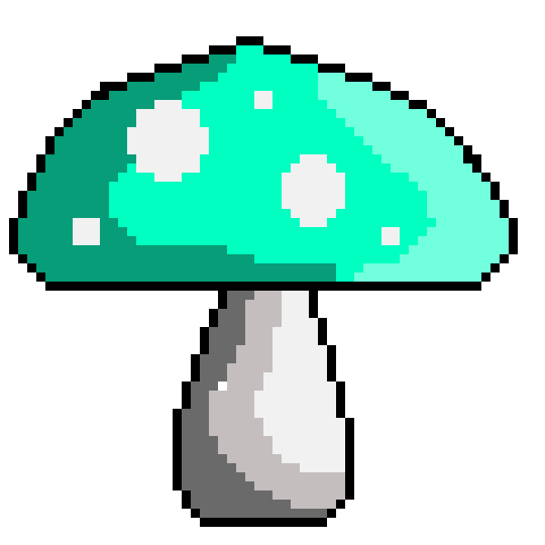
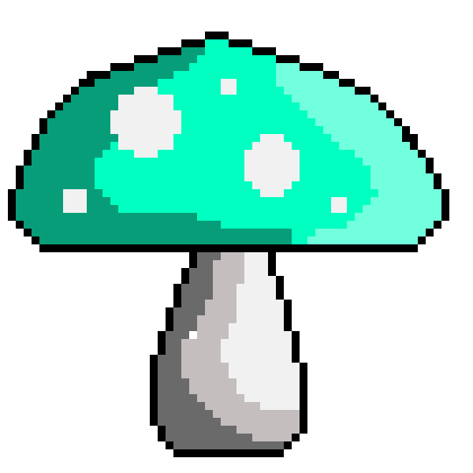

Pomodoro Clock
OVERVIEW
This single page app started as an assignment for a module on FreeCodeCamp.
I decided to take it further and spend time designing the app,
and adding in setting features for usability.
This was the first project I coded using a new framework I had learned -- React.
I had just learned about class components,
and wanted to see how much I can do with this new knowledge.
React
CSS
Figma
DESIGN POINTS
IMPROVEMENTS
This clock is often used by people who want to ensure they get small breaks in-between
work
sessions.
The look of the app should not contribute to the stress of work.
The design must be calming, visually appealing,
and simple to
use.
I put a lot of thought into the colour palette I used and spent time learning
about
colour theory and the various moods colours create.
I chose the calming but happy colours. I also selected audio files that were calming.
I thought it'd be nice to have a visual element on the page that would indicate the progress of time other than the numeric countdown timer. This is why I animated an SVG clock so that the hand goes around in proportion to the countdown clock. I coded a function that calculates the ratio of the work time to break time and displays the ratio on the back of the clock. The background of the clock is separated into two colours (green and yellow) based on the set break time, and the work time. One cycle around the clock is one complete "pomodoro session" (one work and one break session).
I thought it'd be nice to have a visual element on the page that would indicate the progress of time other than the numeric countdown timer. This is why I animated an SVG clock so that the hand goes around in proportion to the countdown clock. I coded a function that calculates the ratio of the work time to break time and displays the ratio on the back of the clock. The background of the clock is separated into two colours (green and yellow) based on the set break time, and the work time. One cycle around the clock is one complete "pomodoro session" (one work and one break session).
IMPROVEMENTS
There are several ways this app can be improved. Currently, the SVG animation pauses
when the tab is not in focus. In order for the clock animation to be in proportion to the countdown timer,
the animation must continue even when the tab is out of focus.
All of the settings buttons should be disabled when the clock is running.
Currently only the apply and default setting buttons are disabled.
 
